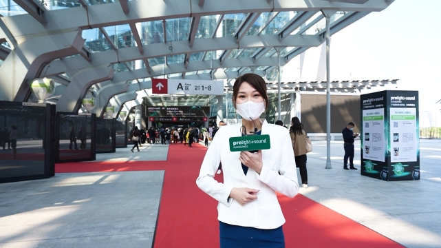

Welcome to Prolight + Sound Guangzhou
February, 2022

Prolight + Sound in Gouangzhou is one of the largest and most important trade fairs for lighting, sound and event technology in China. This exhibition is communication and information platform in the industry and offers the exhibiting companies the opportunity to present to an audience of experts here. Visitors can find in depth and comprehensive information here about the latest developments, trends, products and services in various fields. Visitors will find a wide range of products, seminars, discussion forums, product demonstrations and live entertainment. For exhibitors, the fair is an excellent marketing tool to introduce new products to make business contacts, to strengthen their brand and to maintain existing business contacts.
On the whole the organisers welcomed on the 4 days of the fair, from 16. May to 19. May 2021, about 1386 exhibitors and 82740 visitors on the Prolight + Sound in Guangzhou.
The Prolight + Sound takes place annually, and therefore for the 21st time previsibly in February 2023 in Guangzhou.